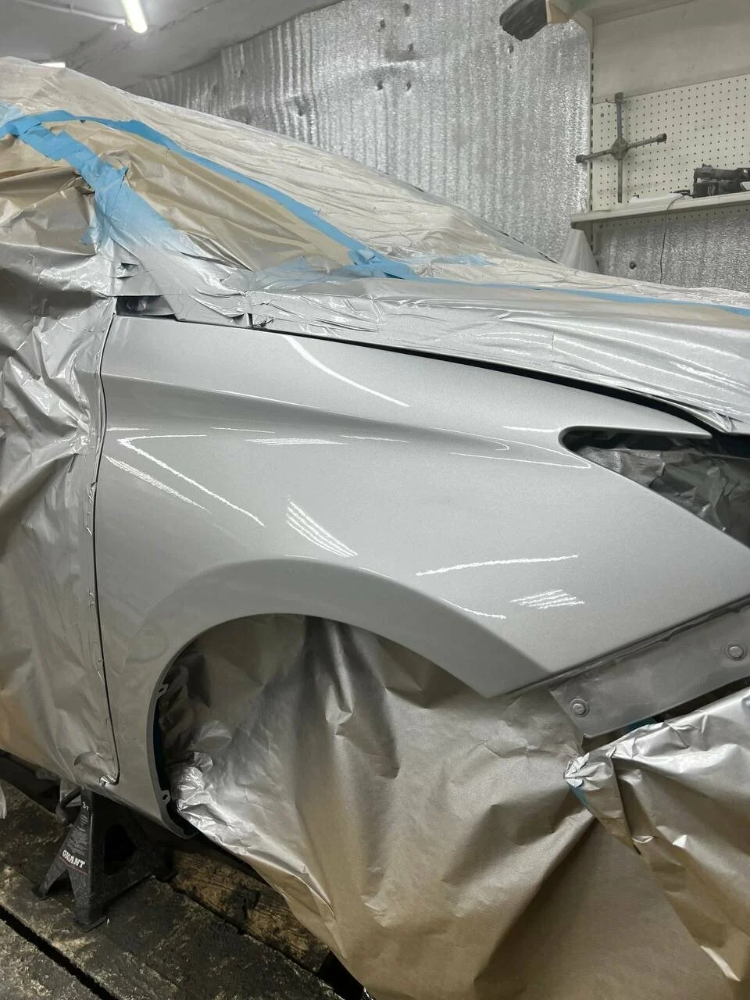

Вмятины, деформация деталей и повреждения после столкновения. При обращении назовите пострадавший элемент и расскажите, изменились ли зазоры или работа дверей. Возможность восстановления детали и необходимость разборки уточняют при оценке автомобиля.
02
Покраска автомобиля
Царапины, сколы и повреждённое покрытие кузова. Обсудите подготовку поверхности, подбор оттенка и границы окрашивания. Сообщите о прежнем ремонте детали: её состояние влияет на объём подготовки и итоговую оценку.
03
Полировка фар
Помутнение и мелкие царапины на наружной поверхности фар. Уточните, подходит ли полировка в вашем случае: внутреннее загрязнение, глубокие повреждения и трещины требуют отдельной оценки. Возможный результат обсудите до начала работ.

Кузовная деталь в мастерской. Фото из галереи Rehab Avto. · Источник
REHAB AVTO · КАЗАНЬ
Внимание к каждой детали
На фотографиях из галереи Rehab Avto — процесс окрашивания и кузовная деталь с укрытыми соседними поверхностями. Для вашей машины состав работ определяется отдельно: важны состояние металла, старого покрытия и доступ к повреждению. Перед началом ремонта обсудите, какие детали требуют восстановления, что входит в стоимость и как согласуются дополнительные работы.
Что рассказать о повреждении
Для первого разговора достаточно последовательного описания. Не ограничивайтесь словом «царапина»: размер, расположение и состояние соседних участков помогут точнее объяснить задачу.
Вмятина на детали: назовите участок кузова, примерный размер дефекта и видимые повреждения краски.
Царапины или сколы: расскажите, затронуты ли несколько элементов и заметен ли металл в повреждённом месте.
Последствия столкновения: перечислите все видимые повреждения и изменения зазоров между деталями.
Помутнение фар: уточните, одинаково ли выглядят обе фары и видны ли трещины или глубокие царапины.
От чего зависит оценка работ
Стоимость кузовного ремонта обычно зависит от характера деформации, доступа к детали, необходимости демонтажа и состояния старого покрытия. Для покраски также важны площадь подготовки и подбор оттенка. Это общие факторы, а не прайс мастерской.
Уточните, что входит в расчёт: подготовка, материалы, разборка и последующая сборка.
Обсудите, как согласуются дополнительные работы, если при осмотре или разборке обнаружатся скрытые дефекты.
Перед звонком и поездкой
Подготовьте марку, модель и год выпуска автомобиля. Сделайте общий снимок повреждённой стороны и несколько близких кадров при дневном свете. Уточните у мастерской, нужны ли фотографии перед визитом и куда их можно отправить.
Расскажите о предыдущем ремонте повреждённого участка и о том, как давно появился дефект.
Перед выездом согласуйте время, маршрут к боксу и возможность оставить автомобиль для осмотра.
Как обратиться в мастерскую
01
Опишите задачу
Позвоните в мастерскую, назовите автомобиль и повреждённый участок. Уточните, можно ли обратиться с такой задачей.
02
Договоритесь об осмотре
Согласуйте удобное время, необходимость предварительных фотографий и ориентиры въезда на территорию ГСК Нур.
03
Обсудите условия
После оценки уточните состав работ, стоимость и сроки, а также порядок согласования возможных дополнительных повреждений.